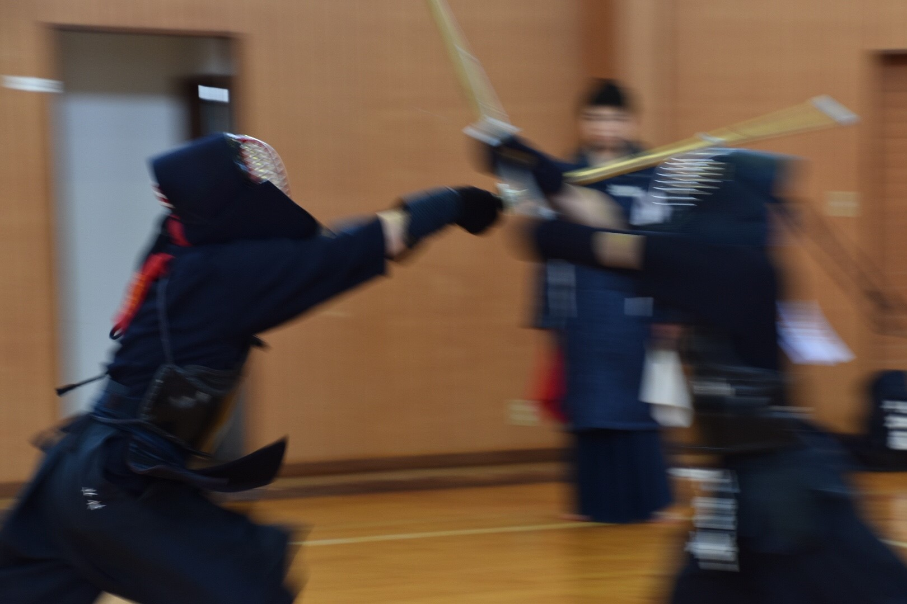
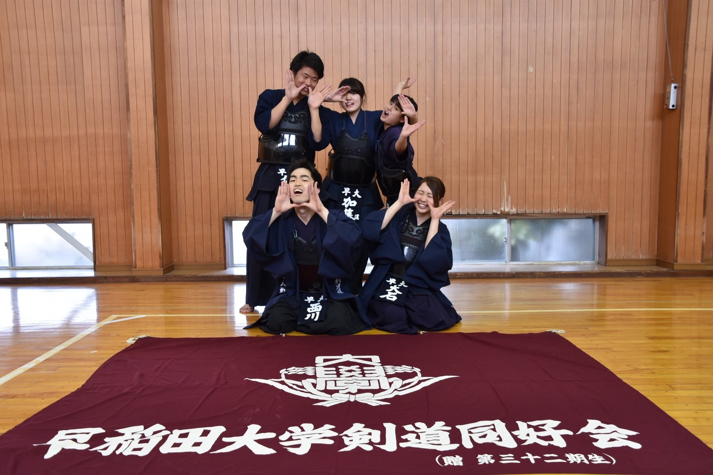
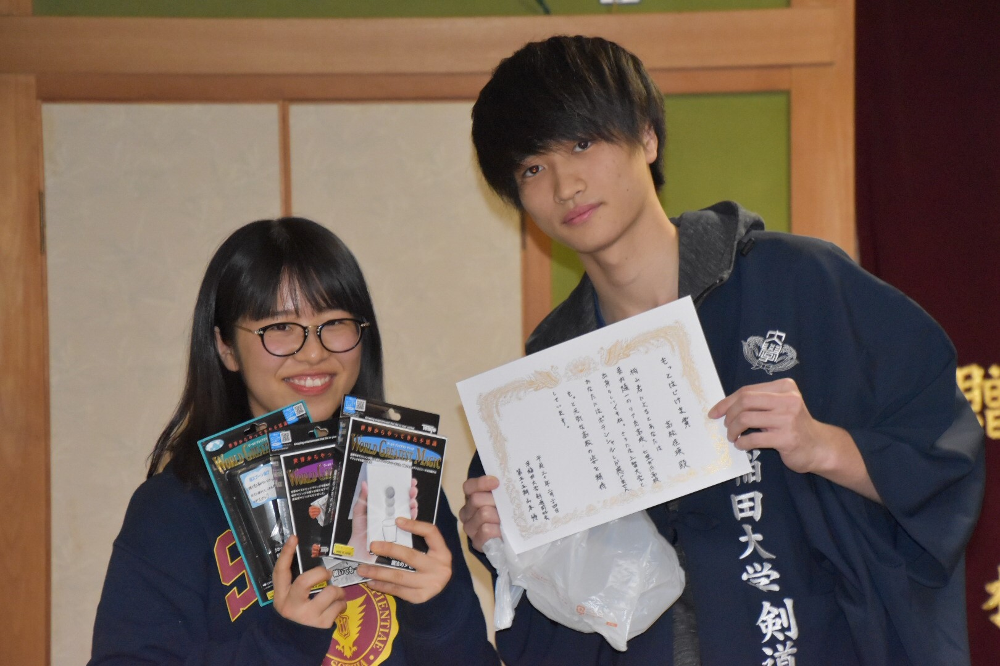

|
今日は合宿4日目、会内試合頑張っていきましょう！ 朝早くから53期の大橋先輩と太田先輩に来ていただきました！ ありがとうございます！ フローリングになりたい 
大会会長の井上先輩、審判長の大橋先輩、応援団長()の太田先輩の挨拶です 選手宣誓は生出(56)！！ みんな協力して会場設営をしてくれてます ありがとう！！！ 試合開始です 試合前にしっかりと作戦会議しているのは拓海チーム  午前は6チームが2つのリーグに分かれて試合を行いました！ スコアに感情を揺さぶられる主将・森(55) 午後はそれぞれ複雑な思いを抱えながら決勝、裏決勝、三位決定戦が行われます 体調不良だった三上(55)も復活しました 待ってたよ～～～ 試合結果は…いかに…！！ 試合中はこんな感じで楽しく見てました、はい 
試合が終わったら記念撮影タイムです まずはチーム銀平 チーム八塚 チーム持田 チーム桑原  チーム大石 チーム拓海 次は55期で集合写真 グラッチェ(^^) 56期！ これは何のポーズ…？ 最後は全体写真です！ みんなでチャンカパーナ！ 恒例の〇〇リスペクトフォト 56期も楽しそうで何よりです ミーティング後の打ち上げでは55期から56期へのプレゼント贈呈がありました まずは田中から生出！ いっぱいニギニギしろよ 大石から及川！ 大西から落合！ ち、違うんすよ…。 加藤から梶浦！ なんかごめんな…。 銀平から遥！ 柏山から菊地！ 
鎌倉から栗原！ 三上から近藤！ かわいい～～～ 
拓海から佐々木！ 柴田から佐野倉！  怜から高松！ 高松ならきっとマジシャンになれる！ 桑原から丹！ 前結びがポイントだからね！ 戸井田から藤浦！ 海賊がまた増えた…。 壮真から宮崎！ バッグはビニル袋じゃないからね？笑 その後は優勝した大石チームと裏優勝した拓海チームの祝杯が行われました！ 打ち上げの締めはいつものアレ まずは桑原の『人生劇場』 次に持田の『紺碧の空』 躍動感がすごい 最後に銀平の『早稲田大学校歌』 長いし疲れてるよね…お疲れ様 その後は大コンパが開催されて4日目は終了でした！ 本当に皆様お疲れ様でした！！！ 5日目の様子はこちら (更新が遅れてしまい申し訳ありませんでした。) (※写真へのコメントは全て管理人がしております。) |